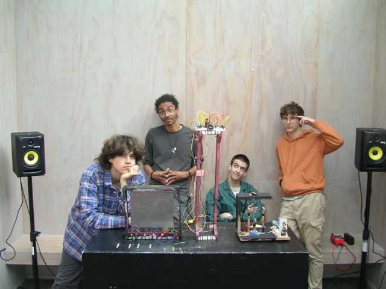
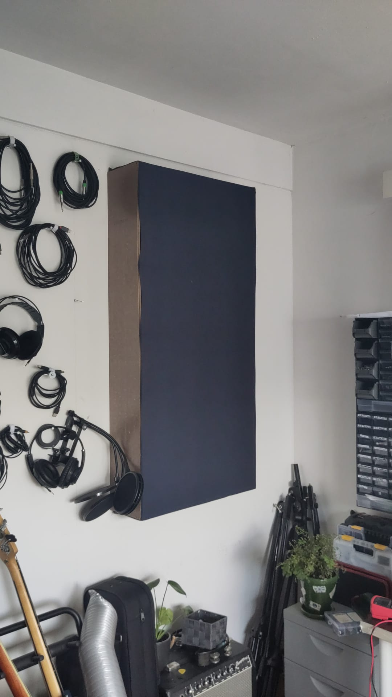

portfolio



Robin van Ulft is een muziektechnoloog in hart en nieren. Die zich bezig houdt met alles wat je maar kan bedenken:
Daarnaast is Robin in diens vrije tijd veel bezig met:
Via de mail kan ik mijn telefoonnummer geven, dan ben ik ook te bellen (niet in de nacht). Videobellen doe ik het liefste via discord: bendymetal
Ik ben ook te DM'en via Instagram, en te berichten via Signal met datzelfde nummer.
.